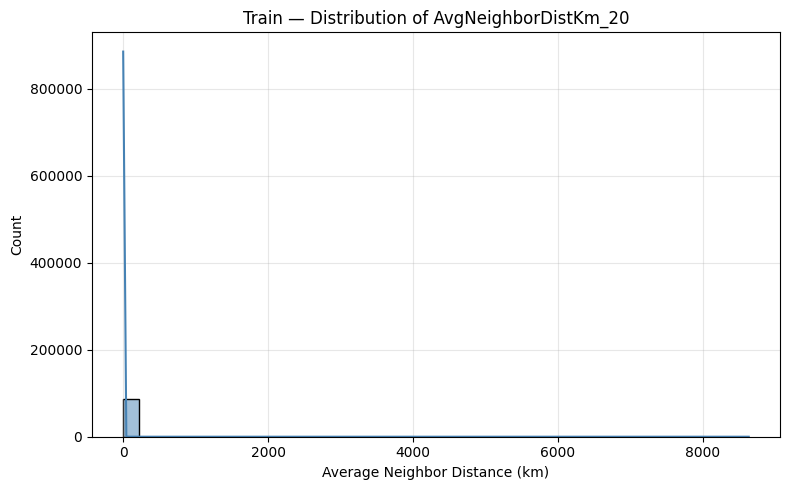
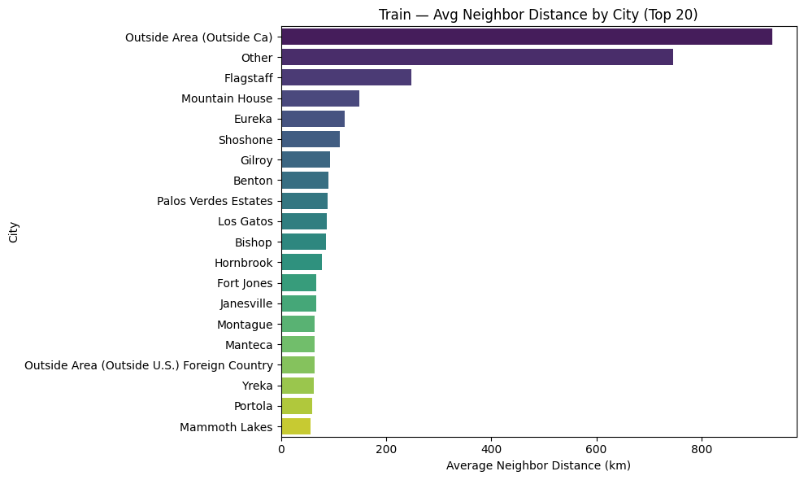
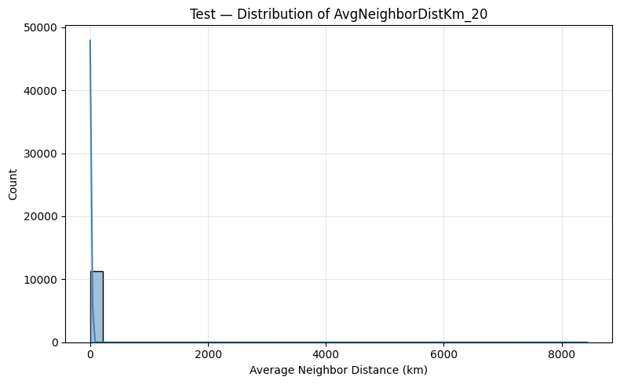
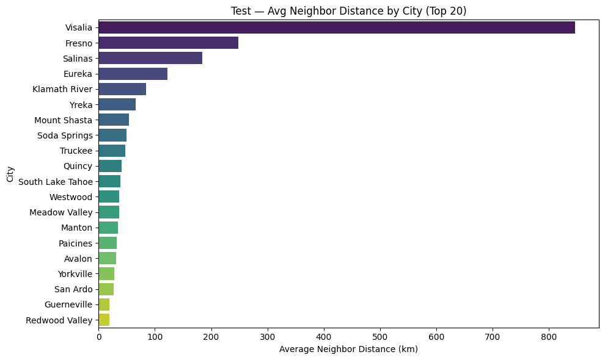

During model validation, my advisor suggested verifying whether the AvgNeighborDistKm_20 — the average distance used to compute MeanNeighborPrice_20, one of the key spatial features — differed significantly between the training and testing sets.
1) Problem Discovery
To investigate, I wrote a diagnostic function to summarize and visualize the distribution of AvgNeighborDistKm_20 for both datasets:
def summarize_and_plot_neighbor_dist(df, name):
col = "AvgNeighborDistKm_20"
print(df[col].describe(percentiles=[0.25, 0.5, 0.75, 0.9, 0.95]))
plt.figure(figsize=(8,5))
sns.histplot(df[col], kde=True, bins=40, color="steelblue")
plt.title(f"{name} — Distribution of {col}")
plt.show()
city_avg = df.groupby("City")[col].mean().sort_values(ascending=False).head(20)
sns.barplot(x=city_avg.values, y=city_avg.index, palette="viridis")
plt.title(f"{name} — Avg Neighbor Distance by City (Top 20)")
plt.show()
2) Visualization Results
Training Set
 Testing Set
 Both datasets showed similar distributions (median ≈ 0.6 km, 95th percentile ≈ 2 km), but a few extreme values exceeded 100 km — clearly outliers from isolated regions in California.
3) Findings & Root Causes
(1) Inconsistent Location Records
After cross-checking, I found that some records had inconsistent City, State or Province, and coordinates — likely due to different data entry standards. Because my model is specifically designed to predict California housing prices, I removed all samples that were not within California’s geographic boundary.
# Filter samples by latitude/longitude boundaries of California
def filter_by_ca_latlon(df: pd.DataFrame,
lat_col: str = "Latitude",
lon_col: str = "Longitude") -> pd.DataFrame:
"""
Keep only rows whose coordinates fall within California’s bounding box:
latitude 32–42 and longitude −125 to −114 (inclusive).
"""
out = df.copy()
lat = pd.to_numeric(out.get(lat_col), errors="coerce")
lon = pd.to_numeric(out.get(lon_col), errors="coerce")
mask = lat.between(32, 42) & lon.between(-125, -114)
kept = int(mask.sum())
removed = len(out) - kept
print(f"CA lat/lon filter -> kept {kept:,}, removed {removed:,}")
return out.loc[mask].copy()
train_df = filter_by_ca_latlon(train_df)
test_df = filter_by_ca_latlon(test_df)
(2) Model Weakness in Remote Areas
🏔 Remote Area: R2 = 0.71, MAPE = 28.16%, RMSE = 301K
🏙 Non-Remote Area: R2 = 0.68, MAPE = 11.93%, RMSE = 1.01M
📦 Remote Test: R2 = 0.19, MAPE = 30.99%, RMSE = 375K
Although remote samples made up less than 1% of the dataset, their prediction errors were three times higher than those of urban areas.
4) Attempted Solution: Split Modeling
To address this, I designed a dual-model pipeline (v3):
| Region Type | Model Type | Description |
|---|---|---|
| 🏙️ Non-Remote | CatBoost | Main model |
| 🏔️ Remote | Hierarchical Median Baseline Fallback | City → County → ZIP → Global |
🏔 Remote: R2 = -0.18, MAPE = 45.8%
🏙 Non-Remote: R2 = 0.87, MAPE = 11.2%
Test remote size: 61 / 11339
However, due to the extremely small number of remote samples, the baseline model performed worse. A separate model was not statistically sustainable.
5) Final Decision & Model v2.1
I reverted to my v2 model but enhanced preprocessing with new cleaning and filtering steps:
- ✅
filter_by_ca_latlonto remove non-CA samples - ✅ Added
AvgNeighborDistKm_20as a diagnostic control variable - ✅ Excluded “Outside Area (Outside Ca)” and “Outside Area (Outside U.S.)” records
🏔 Remote Area: R2 = 0.55, MAPE = 32.1%, RMSE = 266K
🏙 Non-Remote Area: R2 = 0.75, MAPE = 11.5%, RMSE = 822K
📊 Remote share: 124 / 17,301
📦 Remote Test: R2 = 0.39, MAPE = 27.1%, RMSE = 327K
6) Reflections & Insights
- Remote samples (<1%) represent genuine outliers in low-density mountain, desert, or island regions.
- The model remains robust for 99% of the California market (R² ≈ 0.75). Errors stem from sparse density rather than model flaws.
- Future work:
- Add a binary
IsRemotefeature to let the model learn spatial variance. - Augment remote samples or introduce regional median fallback.
- Incorporate geographic context features (elevation, nearest city distance, etc.).
- Add a binary
💡 Takeaway
This case reminded me that outliers reveal a model’s true limits. Understanding where and why a model fails is as important as improving its score. Through this process, I learned to balance data cleaning, geographic logic, and model generalization in real-world predictive modeling.
← Back to Blog